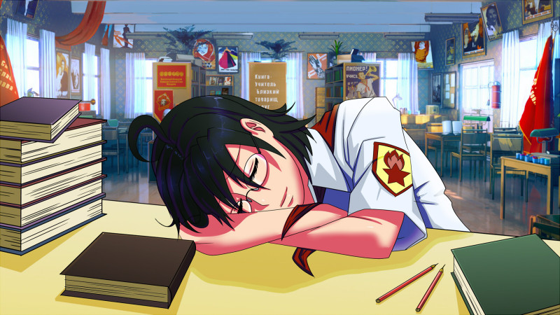

Литературный клуб "У Жужелицы"
Страница 1 из 11 • 1, 2, 3 ... 9, 10, 11 
Литературный клуб "У Жужелицы"
автор peregarrett в Ср 11 Фев 2015 - 1:49

Поскольку в баре на каждого второго накатывает вдохновение, и хочется творить шедевры, а в баре они быстро теряются - создаю тему для литературных творений. Рисовальная тема уже есть, для частушек и лимериков тоже, а сюда будем складывать всевозможные фанфики.
В библиотеке вести себя тихо, дебоширить - в баре!
Тишина должна быть в библиотеке!

peregarrett- Находка для шпиона

- Сообщения : 3264
Дата регистрации : 2014-09-07
Возраст : 36
Re: Литературный клуб "У Жужелицы"
автор 7dl-kun в Ср 11 Фев 2015 - 1:55

7dl-kun- Находка для шпиона
- Сообщения : 3026
Дата регистрации : 2014-09-07
Откуда : здесь столько наркоманов?
Re: Литературный клуб "У Жужелицы"
автор peregarrett в Ср 11 Фев 2015 - 2:00
Ну, что называется, с почином! Про инициативу шуточку уже все знают, так что, Перегарыч, тебе и карты в зубы.
Ну и вот, оправдаю прилипшее ко мне звание хентай-гуру.
- Тишина должна быть в библиотеке!:
Библиотека. Единственное спокойное место в лагере, где можно спокойно посидеть и помечтать, где никто не пристанет с дурацкими идеями, мероприятиями этими, разговорами... Женя привычно села за стол, закрыла глаза и...
...
"Мадемуазель, я очарован. Кстати, позвольте представиться, меня зовут Юджин."
"Евгения."
"Невероятное совпадение! Я уверен, что наше знакомство не случайно. Вы так не считаете?"
"А вы, Юджин, порядочный нахал."
"Ничего не могу с собой поделать, ваша красота заставляет меня забыть о правилах приличия. Кажется, я попал в безвыходную ситуацию - чего, признаюсь, со мной давненько не случалось!"
"И каков же выход?"
"Единственный выход, который я вижу, предполагает ваше присутствие на вечернем балу, у графа. Иначе я обречен вечно преследовать вас, мадемуазель Евгения, в том числе и после моей скорой смерти от истощения."
...
"Мадемуазель Евгения, окажите мне честь. Позвольте пригласить вас на вальс!"
"Нет, Юджин. Вынуждена вам отказать."
"Простите за назойливость, неужели у меня появился соперник? Или причина Вашего отказа в чем-то другом?"
"Соперник здесь ни при чем. Я не люблю танцевать, вот и вся причина"
"И все-таки, я настаиваю, окажите мне такую честь. Ручаюсь, вы не будете разочарованы!"
"Но, я не умею!"
"Ничего страшного, просто отдайтесь музыке, чувствам и позвольте мне вести."
...
"Спокойнее, фройляйн, ведите себя тихо, и никто не пострадает."
"Кто вы?! Что вам от меня надо?!"
"О, сущая безделица. Нам нужен Юджин. Я уверен, узнав, что мамзель Евгения в наших руках, он немедленно примчится сюда, и тут-то мы его и схватим! Ха-ха-ха-ха!"
...
"Юджин, бросай оружие и выходи! Иначе твоя разлюбезная мамзель Евгения окажется на дне залива! А погода сегодня не очень подходящая для купания, ха-ха-ха!"
"Юджин, нет! Это ловушка!"
"Фройляйн, я же предупреждал - ведите себя тихо!" Пощёчина. Ответный пинок в пах.
"Уууу…. ААААААААААААААА!"
...
"Евгения! Слава Богу, я успел! Вы не пострадали?"
"Нет, вы как раз вовремя. Только промокла"
"Пойдёмте скорее, за углом нас ждёт экипаж. Буквально через пять минут мы будем в моём скромном жилище, и вы сможете привести себя в порядок, согреться и обсохнуть."
"В вашем жилище? Не слишком ли вы торопите события, Юджин?"
"В вашем случае это, можно сказать, вопрос жизни и смерти. Вы рискуете подхватить воспаление лёгких, если немедленно не согреетесь. Не беспокойтесь, я заметил как ловко вы расправились с тем негодяем, и, пожалуй, не рискну повторить его судьбу. Прошу вас, сюда!"
...
"Нет-нет-нет, весь мой опыт, как врача, так и путешественника, утверждает - небольшая доза бренди в вашем случае просто необходима!”
…
Взгляд, прямой и теплый, глаза в глаза. От губ до губ - чуть больше десяти сантиметров…
…
Тук-тук-тук.
Черт. Кого это принесло так вовремя?
“Не заперто!” - чтоб вас всех…
“Привет, Женя! А я тебя в столовой видела, подумала, что надо зайти, но ты так быстро убежала, я даже не успела доесть, и пришлось скорее относить поднос, а потом я по привычке вернулась в клуб, и только там вспомнила, что хотела зайти, и пришлось возвращаться, а тут внезапно ливень…”
Мику-тараторка. Женя подняла ладонь, прерывая этот Ниагарский водопад.
“Привет, Мику. Ты за нотами, что ли?”
“Да! То есть, нет! А у тебя есть новые ноты? А когда привезли, я не помню чтобы на этой неделе кто-то приезжал. Только этот новенький, Семен, но он все вокруг Лены увивается, смешно, правда? Или у него с собой были книги? Я не видела, но вдруг...”
“Мику, притормози! Нет, никаких новых нот нету. И не будет, смена уже почти закончилась. Повторяю вопрос - ты с чем пришла?”
С ума сойдешь с ней! Всего пара минут прошла, а нить разговора уже не найти.
Мику, к удивлению, не разразилась новым малосвязным потоком слов, а смущаясь и запинаясь, выдавила из себя.
“Нуу… я подумала… Я ты вот всегда одна тут сидишь, ни с кем не общаешься… И я тоже у себя в клубе сижу... Меня когда руководителем клуба выбрали, я думала будет весело… Нет-нет, я не жалуюсь, но все время одной немного грустно...“
Интересный поворот.
“Так это ты решила так просто зайти? Поболта-а-а-ать?!”
“Ну да… Нет, если я помешала - я пойду. Мне еще там надо одну вещь проработать…”
Печальная и молчаливая Мику… да полно ли, бывает ли такое?
“Да ладно, ты не помешала. Хочешь чаю?”
"Хочу! Плохо, я не догадалась конфет захватить, но если хочешь, я могу быстро сбегать! Там такие вкусные, мне папа привёз, когда приезжал, они у меня в клубе лежат..."
"Тпрррууу! Мику, пожалуйста, притормози!" - кажется, она вернулась в своё обычное состояние девочки-радио.- "У меня пряники есть."
"Хорошо, пряники тоже вкусные!"
Чайник был ещё горячий, и поэтому вскипел буквально за считанные секунды. Мику схватила обе горячие кружки, и танцующей походкой полетела к столикам. Достав из шкафчика пакет, Женя двинулась следом - и увидела, как бирюзовый вихрь описал немыслимый пируэт и плюхнулся в потертое кресло, закинув ноги на подлокотник. Из дымящихся кружек при этом не упало ни капли. Развязав пакет и поставив его в центр столика, Женя села на стул, требовательно протянув руку.
"Давай чашку! И бери пряники. Лучше макать в чай, они чуть-чуть засохли.”
Дурашливо улыбнувшись, Мику подняла свою кружку в воздух.
“Ну, за встречу! Кампай!”
Фыркнув, Женя звякнула своей чашкой об ее кружку.
“Прямо как будто и не японка!”
“Ой, ну у меня же Па русский, инженер! К нам домой часто его друзья приходили посидеть, а я подглядывала в щелку. Чего только не наслушаешься от них! Ма наутро все время на мигрень жаловалась - на кухне накурено, всю ночь галдели, а Па говорит - ничего ты, женщина, не понимаешь в русской душе! И еще ворчал, что это ваше сакэ - дрянь полнейшая, а нормальную водку приходится из дому везти.”
Мику так артистично изображала то недовольную мать, то ворчащего отца, что удержаться от смеха было невозможно.
" Мику, ты прямо театр одного актера, умрёшь с тебя. А тут у меня представляешь что было? Ты же знаешь, Электроник все за мной хвостиком ходит, надоел до смерти... Так вот представляешь, что он сегодня придумал? Приходит такой с каким-то пакетом, и говорит - смотри, мол, что у меня для тебя есть! А сам при этом чуть ли не сияет, как медный таз"
"Ну, а что в пакете было-то?! Не томи!"
"Слушай дальше. Я спрашиваю - что ты принёс, Сыроежкин? А он такой - та-дааам! - и достаёт из пакета бутылку "Столичной"! Додумался!"
Мику сложилась пополам от хохота в своём кресле.
"Так он... так он... Ой, не могу!... Так он думал тебя так соблазнить?... Ой-ей-ей!"
"Да! Будто я прямо с порога начну с ним пьянствовать! И ведь додумался же, гений-изобретатель! Кто только надоумил его... Ну что ты все ржешь, Мику?"
Мику все никак не могла разогнуться и отдышаться.
"Ой, не могу... Мамочки... Это же... Ой-ей-ей... Это же ему Алиса подсказала!"
"Да ты что?! Она же его не переносит!"
"Да, но он ей предложил к усилителю какую-то новую примочку спаять. Прибегает недавно в клуб, спрашивает, где Алису найти. Я так удивилась, спрашиваю - ты так по фингалам соскучился? А тут Алиса идёт. Ну она его сначала погнала, но он какой-то журнал достал и начал что-то объяснять... В общем, бить его она не стала. А на следующий день Алиса приходит, а её аж распирает, Сыроежкин, говорит, спрашивал, как ему сделать, чтоб девушка посговорчивее была! А она вон ему что посоветовала, оказывается!... Женечка? Жень, ты в порядке? Ты дышать-то не забывай!"
Женя уже не смеялась, а подвывала, уткнувшись лбом в стол.
"Жень, ну все понятно, но откуда он бутылку-то достал? Неужели с собой привёз, или у Алисы выменял?"
"Да нет. Я у него отобрала и пригрозила вожатой рассказать, и он мне все выложил! Им для чего-то в клубе нужно, вот Славя из медпункта и выдаёт понемногу. Протирают там что-то..."
"Оптические оси? У меня Па так шутил - выпишите мне спирт для протирки оптических осей. Не знаю, что это означает, что-то инженерное, наверно."
"Оптические оси я ему на задний привод натяну, если ещё раз ко мне подойдёт! Тоже мне, Казанова нашёлся!"
"Ой, да чего это ты так ругаешься? Влюбился парень, они когда влюбляются - все дураки становятся... Слууушай, так значит бутылка у тебя лежит? А покажи!"
"Да что там смотреть, будто не видела никогда... Ладно, только дверь запру, а то если кто-нибудь увидит - замучаемся объяснять."
Выглянув за дверь, Женя огляделась - ничего подозрительного, никто не спешит приобщиться к знаниям - и закрыла дверь обратно. Щелкнул замок.
Открыв нижний ящик стола, она извлекла оттуда бумажный пакет.
"Та-даааам! Тьфу, вот привязалось! В общем, вот."
Бутылка была извлечена на свет божий и утвердилась рядом с пряниками. Девочки некоторое время смотрели на неё, потом Мику спросила:
"Женя. А ты пробовала когда-нибудь?"
"Я? Нет... Только шампанское, на Новый Год. А ты?"
"И я тоже нет... Может, попробуем?"
"Ты серьёзно?!"
"Ну интересно же! Когда ещё доведётся попробовать?"
Мику прямо подпрыгивала на месте.
"А если мы станем пьяные, и нас заметят? Это такой скандал будет..."
"Не заметят, мы же тут заперлись! Всё закрыто, подумают, что здесь никого нет, все ушли. А мы будем друг за другом следить, чтобы не стать пьяными. Тебе что, не любопытно попробовать?"
Женя задумалась. Сказать по правде, Мику была права - было очень интересно, какого эффекта ожидал Электроник?
"Ну, наверно, если немножко - то ничего страшного? Только ты следи за мной!"
"А ты за мной, ладно? А то мало ли, вдруг что."
Вылив из кружек остатки чая, Женя подковырнула ногтем металлическую крышечку.
"По сколько наливать? Полчашки?"
"Давай поменьше, мы же только попробовать. Чуть-чуть на донышке, только следи чтоб нам одинаково досталось!"
Затаив дыхание, будто бы проводя опыт на уроке химии, Женя наклонила бутылку над чашкой. Бульк, бульк...
"Хватит! Теперь себе наливай."
Такой же двойной бульк, и к эксперименту все было готово. Девочки взяли чашки и заглянули внутрь, собираясь с духом.
"Пахнет, как в медпункте..."
"Ну там же спирт! Надо только разом, как лекарство. Давай на раз-два-три?"
"Раз!" - они переглянулись
"Два!" - поднесли чашки к губам, и
"Три!" - синхронно влили в себя содержимое.
Секунда тишины, судорожный вздох, вытаращеные глаза.
"КХЕ! КХЕ! Хааа... Аааа... Кошмар, как они это пьют! Отвратительно! Надо заесть скорее!" - Мику с хрустом вгрызлась в недоеденый пряник.
Высохший пряник был, если честно, не лучшей закуской. Кашляя и задыхаясь, Женя достала из тумбочки оставшийся с завтрака бутерброд с колбасой и откусила от него приличный кусок.
“Кхеее… Уффф. На, заешь вот этим, только все не съедай, оставь чуть-чуть.”
“Кхе… Спасибо!” - Мику вытерла выступившие слезы. “Жуть, наверно мы как-то неправильно ее пили. Ну и что теперь? Какие ощущения?”
Обе девочки сосредоточенно прислушивались к тому, что происходило внутри.
“Только в животе горячо, а так больше ничего не чувствую.”
“И я, как будто что-то горячее разом проглотила.”
“Может быть, надо еще? Беее…”
“Наверное… Тьфу, опять эту гадость глотать!”
“Ну ладно, давай все-таки попробуем. Надо же разобраться.”
Женя опять разлила по чашкам водку, а Мику тем временем разрезала остатки бутерброда на мелкие кусочки.
“Так, давай снова. Раз! Два! Три!”
Опрокинув чашки, экспериментаторши немедленно схватили по кусочку бутерброда, закинули в рот и разжевали.
“А теперь не так противно, хихи!” - удивленно сказала Мику.
“Ага, наверно мы научились!” - Женю тоже разбирало непонятное веселье - “Мы теперь умеем пить водку! Какие мы молодцы! Хи-хи-хи!”
“Ага, Женечка, прямо как взрослые!” - Мику вытянулась в кресле, раскинув руки и ноги как морская звезда. Солнце за окном клонилось к закату, и теплые лучи подсвечивали точеную фигурку, превращая белую рубашку в полупрозрачный пеньюар. Женя застыла, поглощенная видом.
"Мадемуазель, я очарован. Кстати, позвольте представиться, меня зовут Юджин." - внезапно произнес ее внутренний голос.
“А вы, Юджин, порядочный нахал…” - подумала Женя, но ощущение странной решимости не пропадало.
“Мику? Давай еще? На брудершафт?” - предложила она, слегка запнувшись на последнем слове.
“Брудершаа-а-афт? Это когда целуются? Ой-ёй-ёй, Женечка!” - раскрасневшаяся Мику прикрыла улыбающиеся губы ладошкой.
Женя деловито набулькала водки в чашки и протянула японке.
“Раз!” - Женя склонилась к сидящей Мику -
“Два!” - их руки переплелись -
“Три!” - мгновенно опустошив емкости, закинули в рот еще по крохотному кусочку закуски.
“Маленькая порция алкоголя - это то, что вам сейчас жизненно необходимо, мадемуазель!”
Выдох. Взгляд глаза в глаза. Раскрасневшиеся щеки - то ли от алкоголя, то ли от смущения.
Сближение. Ее бирюзовые глаза - немного темнее цвета волос - полуприкрыты, носик кокетливо вздернут… Касание мягких губ - будто бы теплая искра проскочила между ними. Мику удивленно распахнула глаза.
“Же… Женечка?!... Ты...”
"Тсс..." - Женя приложила указательный палец к губам подружки, прерывая готовый вырваться наружу поток слов.
"Просто отдайтесь чувствам, мадемуазель, и позвольте мне вести."
Ладонь скользит по гладкой коже щеки, и спускается к шее. Твёрдый воротник рубашки - преграда! Палец проникает в узел галстука, секунда - и алый шелк безвольно распластался на плечах. Пуговицы сдались ещё быстрее. Мику ахнула. Повинуясь все тому же внутреннему импульсу, Женя накрыла её губы своими, язык осторожно скользнул внутрь, будто знакомясь. Мягкими прикосновениями он добился ответа, и два кончика принялись изучать друг друга. Сплетенное дыхание, танцующие язычки - все это заставило Мику глухо застонать и податься навстречу. Руки Жени обняли её талию и, выпростав рубашку из-под пояса, скользя по обнаженной коже притянули их друг к другу.
“Аааах… Женечка..." - выдохнула Мику, когда недостаток воздуха вынудил их прервать поцелуй. - "Ты сумасшедшая, правда-правда! Что ты делаешь?"
Женя не отвечала. Удивленные глаза Мику, румянец на щеках, сбивающееся дыхание, расстегнутая рубашка и выглядывающий оттуда лифчик в полосочку, ощущение тепла её тела - все это вызвало в ней необычайную бурю чувств. Такого она никогда не испытывала... Что же делать? Отстраниться? Свести все в шутку? Но тогда... все прекратится?! Нет!
"Главное - уверенность в себе. Не стоит тратить время на рассуждения, когда нужно действовать."
В который уже раз за сегодня совет воображаемого друга оказался дельным. Прямо и твёрдо глядя в бирюзовые глаза, Женя накрыла ладонью полушарие ее груди. Твердое кружево - совсем не то, чего ей хотелось коснуться! Вторая рука скользнула вверх вдоль позвоночника, нашаривая застежку.
"Женя, Женя, погоди, что ты делаешь? Женечка, постой..." - смущенно забормотала Мику, но в этот момент непривычная пластиковая пряжка поддалась, и кружевной доспех сдал свои позиции. Пальцы немедленно ощутили прикосновение нежной кожи, небольшая грудь удобно уместилась в ладони. Маленький сосочек, похожий на спелую ягоду земляники, естественным образом оказался зажат между указательным и средним пальцами.
"Женя-а-а-а-а-ах!" - протянула Мику, и выгнулась, запрокинув голову. Воодушевленная такой реакцией, она немного покатала ягодку между пальцами, и новые сладкие стоны нарушили тишину библиотеки.
"Хорошо, что все окна закрыты, а то кто-нибудь мог бы услышать" - мелькнула мысль, но тут же утонула в потоке жарких сумасшедших идей и желаний - например, попробовать эту ягоду на вкус. Не теряя времени на раздумья, Женя мимолетно поцеловала девочку в губы, потом в шею, над ключицей, пробежалась вниз, в ложбинку между грудей... И наконец-то коснулась губами торчащего соска, вызвав у разомлевшей Мику очередной полу-стон, полу-крик.
"Она вся - будто выточенная из слоновой кости статуэтка, только тёплая и гибкая" - всплыло внезапное сравнение. Жене вдруг захотелось сделать так, чтобы и мысли, и тело этой прекрасной девочки принадлежали только ей, утвердить свою власть… Она описала кончиком языка кольцо вокруг “земляничины”, поддразнивая ее и наслаждаясь тем, как Мику неосознанно пытается подставить его под ласки, потом сжалилась и легонько прикусила сосочек зубами. Девочка тонко вскрикнула, ее пальцы вцепились Жене в волосы. “Прошу тебя, продолжай! только не прекращай!” - недвусмысленно читалось в этом жесте.
“Ну, если ты так просишь, подружка…” - усмехнулась про себя Женя и великодушно продолжила. Каждому движению языка аккомпанировал протяжный стон, они становились все чаще и громче, побуждая действовать все сильнее и грубее. “Как же она кричит… так нас кто-нибудь обязательно услышит, даже через закрытые стекла!” - подумала Женя и, оставив грудь на попечение рук, снова накрыла ее рот губами.
“Женечка-а-а… еще-е-е…” - прошептала Мику, отвечая на поцелуй.
“Нет, дорогая, у меня есть идея получше”.
Ладонь ложится на резинку чулка и уверенно, не спеша, движется выше. Юбка с еле слышным шелестом сминается, открывая полосатые трусики, в пару к лифчику… чуть влажные на ощупь. От прикосновения девочка вздрагивает, пытается сжать ноги - не-е-е-ет, этого тебе сегодня не позволено! “Ты в моей власти!”. Ладонь проникает под хлопковую преграду…
“М-м-м-м-м!“ - жадный поцелуй все продолжается и продолжается, и этот глухой стон - единственный звук, который ей сейчас доступен.
Пальцы скользят по горячим влажным лепесткам, заставляя ее двигаться навстречу, поддерживают ритм, проверяют - а если коснуться тут? а здесь? а там, поглубже? нравится? хорошо-о-о… Амплитуда нарастает, а за ней и темп - старое кресло поскрипывает, но чтоб разломать этот образчик советской мебели потребуется что-то серьезнее двух юных девушек, так что не о чем беспокоиться. Стоны, хоть и приглушенные, становятся все громче, иногда даже можно разобрать какие-то слова - что-то на японском, похоже.
Мелькнула мысль - "Эта похотливая шлюшка сейчас обкончается прямо у меня в руках!", и грубость слов странным образом сливалась с чувством нежности и умиления, охватившим Женю. Обняв её за талию и прижав плотнее к себе - чтобы не оставить ни малейшего шанса вырваться, она старалась воздействовать на самые-самые чувствительные места, спеша наполнить её наслаждением до краев, прежде чем эта чаша опрокинется. Вскрики слились в непрерывный сдавленный стон, ритмичные движения бедер превратились в крупную дрожь - о да, уже почти, точка невозврата уже пройдена, и с последним тоненьким "А-а-а-а-и-и-и-и-и-и!!" Мику безвольно обвисла в её руках, тяжело дыша и едва слышно что-то шепча. Женя бережно опустила ее в кресло и села рядом, обнимая и гладя по голове - удивительно, несмотря ни на что, длинные волосы ни капельки не растрепались!
"Женечка... Ты сумасшедшая, ты знаешь? Я едва не умерла, кажется. Ещё бы чуть-чуть - и я, наверное, сгорела бы, или взорвалась!" - прошептала Мику спустя некоторое время. - "Никогда такого не испытывала... Откуда ты... Ой, я и не думала, что ты... что тебя девочки привлекают... "
"Я тоже не думала" - смущённо ответила Женя. - "Просто сначала залюбовалась тобой, а потом... Само как-то вышло. Прости, я и не предполагала, что..."
"Ну теперь хотя бы понятно, на что рассчитывал Сыроежкин" - рассмеялась Мику.
"Нет, ему бы точно ничего не обломилось! Ни на вот столечко!" - присоединилась к веселью Женя.
"Да-а, вот это приключение-е-е..." - произнесла, отсмеявшись, Мику. - "Ой, Женечка... А ты как же?"
"Я? А что я?" - смутилась обычно непробиваемая Женя.
Мику вскочила с кресла.
"Нет-нет, так будет нечестно! И вообще, я читала, что это вредно - когда возбуждаешься и не..." - она смущённо запнулась и схватила чашки. - "Садись, Женечка! За любовь?" - хитро прищурилась она.
Уже привычным методом опрокинув в рот порцию "огненной воды" и зажевав микро-бутербродом, Женя села на стул, пытаясь отдышаться.
Внезапно Мику прыгнула ей на колени и уселась лицом к ней, будто верхом. Казалось, её не смущает ни поза, ни распахнутая рубашка. Смешливо улыбаясь, она обняла Женю и крепко поцеловала прямо в губы. Женя обняла её в ответ, но девочка придержала её руки.
"Сиди и не шевелись!" - погрозила она пальцем. - "А то ты меня опять так заведешь, что я про все забуду!" Она задумалась на мгновение, потом, со странной улыбкой потянула за хвост своего галстука. Несколько быстрых движений - и руки Жени оказались связаны сзади за спинкой стула. Свернутый в жгут шелк не врезался в запястья, но держал прочно.
"Вот так лучше!" - сказала Мику, все так же странно улыбаясь. Её взгляд был непривычно тверд - уже не тёплая бирюза, но ледяная глубина горного озёра, с проблеском стали. Она снова прильнула к губам Жени, вызывая её язык на состязание, и Женя не нашла в себе ни сил сопротивляться этому натиску, ни желания этого делать. Вся её недавняя решительность исчезла так же внезапно, как и появилась, и она с замиранием сердца ожидала, что же случится дальше.
Прервав поцелуй как раз тогда, когда Жене перестало хватать воздуха, Мику медленными движениями стала развязывать её галстук, и расстегивать пуговицы на рубашке, одну за другой. Стыд за свое старенькое застиранное бельё неприятно кольнул Женю, она отвела взгляд в сторону, но Мику не обратила на это никакого внимания.
"Какая у тебя красивая грудь, Женя." - прошептала она на ухо смущенной девушке. - "Большая и красивая. Ну-ка, давай не будем её прятать, я хочу её как следует рассмотреть...". Женя почувствовала, как узкая ладонь проникла в чашечку бюстгальтера и по-хозяйски обхватила её содержимое.
"Такая большая и мягкая! Так приятно её трогать!" - продолжала жарко шептать Мику, и волны мурашек разбегались по телу Жени от этих слов. А ловкие пальчики тем временем расстегнули застёжку на спине и сдвинули неуместную сбрую в сторону.
"Смотри, у меня маленькая, а у тебя... Тебе, наверно ещё приятнее, когда гладишь, да?" - Мику прижалась вплотную и, придерживая руками, стала тереться своей грудью об её. - "Тебе нравится? Это называется "тайский массаж", только надо ещё маслом или мылом намазаться... М-м-м, так приятно... А тебе? Тебе хорошо?"
"М-м... а-а-а-а..." - все усилия Жени удержаться от неприличных звуков оказались тщетными. Связанные за спиной руки, заголенная грудь и бесстыдно трущаяся об неё Мику с пошловатыми комментариями - Женя будто бы оказалась в декорациях какого-то любовного романа, про приключения в гареме некоего властного раджи. Хоть литературные качества таких романов и оставляли желать лучшего, описания любовных сцен каждый раз волновали её. А уж ощутить это в реальности... Женя разрывалась между стыдом и нарастающим желанием - сказать ей, чтобы перестала? Или чтобы продолжала? О нет, так стыдно... И так волнительно! Но надо же что-то сказать?!
"Мику-у-у... А-а-ах... Что ты творишь... Не надо..."
"Нет, Женечка, надо!" - хихикала Мику, явно наслаждаясь своей доминирующей ролью. - "Ты так меня ублажила... Я должна тебе отплатить тем же, иначе это будет против кодекса чести самурая. Так что... Готовься!"
Она спустилась ниже, сжала обе её груди вместе и принялась ласкать.
"Видишь как здорово с большими, их можно целовать обе вместе! И вот так облизывать! И ещё вот так!" - при этом она еще и умудрялась болтать - "Ты такая соблазнительная, Женечка, такая вкусная, ммм... Я хочу тебя прямо заласкать-заласкать!"
Женя уже окончательно, что называется, "поплыла", отдавшись происходящему без остатка - коварная Мику не оставляла ей выбора, сбивчивого дыхания хватало только на невнятные стоны. А та, распалившись, уже не ограничивалась поцелуями и поглаживаниями - в один момент прикусила жаждущий сосок зубами, вызвав у Жени непроизвольный крик.
"А-а-а-й, Мику-у-у-у..."
"Ой, прости, тебе больно?... Может быть, прекратить?" - Мику с хитрой улыбкой продолжала пощипывать сосочек пальцами.
"Да-а-а... Нет! О-ох, ты меня с ума своди-и-ишь..."
“Ой, какая ты противоречивая, Женечка! Ты прямо сама не знаешь, чего хочешь. И ты так кричишь, сюда могут сбежаться люди. Ты ведь не хочешь, чтобы нас в таком виде застала Ольга Дмитриевна или Славя?” - кажется, она опять что-то задумала. Что-то сумасшедшее… Волнение, предвкушение, страх - этот коктейль чувств смешался с чувственным желанием, заставляя Женю замереть, как кролика перед удавом. Мику же нежно поцеловала ее, покусывая за губу, а потом вдруг вложила ей в рот скрученный галстук - и когда она успела его стянуть? - и завязала концы на затылке.
“Ы-м-у-м?!” - удивлено и возмущенно воскликнула Женя сквозь этот импровизированный кляп.
“Ну как это зачем, Женечка?” - хихикнула Мику. Она склонилась к ней и прошептала на ушко, щекоча губами мочку - “Потому что… тишина… должна быть… в библиотеке!”
С этими словами она опустилась на колени на пол и снова принялась мять, облизывать, целовать, покусывать, дразнить, не обращая больше внимания на протесты Жени. Впрочем, Женя скоро оставила все мысли о сопротивлении. Шелковый кляп надёжно глушил все громкие крики, так что ей не оставалось ничего, кроме как закрыть глаза и отдаться прикосновениям волшебного язычка Мику.
Внезапно она почувствовала, как острые ноготки, едва касаясь кожи, прокрались вверх по бедрам, проскользнули под юбкой и подцепили резинку трусов.
"Она же сейчас... О нет... О-о-о, да-а-а!" - в голове плясали только невнятные обрывки мыслей, ей одновременно хотелось и убежать, и скорее ощутить её ладонь там... Но ни того, ни другого не было ей позволено, поэтому ничего не оставалось, кроме как ждать, дрожа от предвкушения и тревоги. Вот резинка медленно поползла вниз, Женя даже привстала, чтобы пропустить её, вот они спустились до коленей, вот они упали на пол, вот две ладошки поползли вверх...
"Сейчас-сейчас-сейчас! И-и-и-и..." - Ничего не происходило! "Эта вредная сучка дразнит меня!" - задыхаясь от вожделения, подумала Женя.- "Ну же, не тяни-и-и!" - пыталась сказать она, но - чертов галстук! Подалась бедрами ей навстречу, в надежде, что Мику поймёт и перестанет её дразнить - нет! Ладошки продолжали топтаться на одном месте, то поднимаясь выше, почти до самого места, то отступая... Женя чуть не плакала от досады - "Она меня мучае-е-ет!!! Ну же, поласкай меня! Я не выдержу больше! Хочу-хочу-хочу-у-у...". Из-под плотно сомкнутых век текли слезы, дыхание больше походило на всхлипы.
Вдруг, без предупреждения, что-то горячее и скользкое коснулось самого центра и, раздвинув складки, проникло внутрь. Женя дернулась как от удара током, выгнулась, едва не опрокинув стул... Но руки Мику крепко обвивали её бедра, а неутомимый язычок продолжал и продолжал описывать фигуры, то выше, то глубже, заставляя Женю выгибаться как на "мостике" и кричать в голос - точнее, выть и мычать сквозь алый шелк. Это продолжалось и продолжалось, пока наконец всесносящая волна - "Цунами!" - внезапно всплыло откуда-то из глубин памяти - пока волна цунами не накрыла её целиком с головой.
...
Открыв глаза, Женя увидела над собой обеспокоенное лицо Мику.
"Женечка? Ты очнулась? Ты меня так напугала! Я и не ожидала, что..."
"Не ожидала?!" - хотела возмутиться Женя, но получилось лишь мычание.
"Ой, прости, сейчас развяжу!" - смущённо затараторила Мику, распутывая узелки на галстуках. "Вот, сейчас-сейчас!"
"Мику! Ты... Ты... Ты!" - у Жени не было слов.
"Что, Женечка? Тебе не понравилось?" - Мику снова хитро улыбалась. - "А мне показалось, у тебя был сумасшедший оргазм, ты едва меня не скинула, как дикая лошадка, так брыкалась!"
"Придушу!" - прошептала Женя и попыталась встать, но тут же обессилено плюхнулась обратно. Нет, на то, чтобы встать, сил уже не осталось. Мику обняла её и чмокнула в губы.
"Ну вот теперь мы в рассчете, ведь так? Один-один, ничья, хи-хи!"
Женя усмехнулась.
"Один-один. Но так как игра проводилась на моём поле - мне начисляются дополнительные пол-очка!".
"Хи-и-и-итра-я-а-а! Тогда я требую матч-реванш на моём поле!" -притворно возмутилась Мику.
"О-о-ой, только не сегодня. Ты из меня все силы выпила..." - сказала Женя и вдруг покраснела, осознав буквальный смысл слов.
"Да-да, именно так, и только посмей сказать, что ты этого не хотела! Не поверю!"
Посидев в обнимку, девочки принялись приводить себя в порядок.
“Женя, надо куда-то пустую бутылку спрятать. Может, в лес выкинем? Или в реку? Правда, нехорошо природу загрязнять. Но если тут выкинуть - ее найдут, и будет скандал! Всех на уши поставят.”
“А давай закинем на крышу столовой? Там никто не найдет, а если потом она свалится, то подумают на каких-нибудь ремонтников, которые крышу чинили.”
“Ой, как ты здорово придумала! Давай тогда вечером закинем, чтоб никто не заметил! А пока спрячем тут у тебя.”
С улицы раздались звуки горна. Ужин. Засмеявшись и держась за руки, девочки побежали к столовой.
Ого, как точно попал.
peregarrett- Находка для шпиона
- Сообщения : 3264
Дата регистрации : 2014-09-07
Возраст : 36
Re: Литературный клуб "У Жужелицы"
автор Chess в Ср 11 Фев 2015 - 12:22

Chess- Находка для шпиона
- Сообщения : 3798
Дата регистрации : 2014-10-05
Откуда : Город на краю света
Re: Литературный клуб "У Жужелицы"
автор peregarrett в Ср 11 Фев 2015 - 12:29
прижал уши в преддверии неминуемого взрыва
peregarrett- Находка для шпиона
- Сообщения : 3264
Дата регистрации : 2014-09-07
Возраст : 36
Re: Литературный клуб "У Жужелицы"
автор Chess в Ср 11 Фев 2015 - 12:40
Эм-м-м... А про Алису тут где? При чём тут ваще Алисочка? Она просто пошутила, а Эл повёлся, как последний придурок.peregarrett пишет:И вот почему Алиса танцует с Электроником на дискотеке.
прижал уши в преддверии неминуемого взрыва
Chess- Находка для шпиона
- Сообщения : 3798
Дата регистрации : 2014-10-05
Откуда : Город на краю света
Re: Литературный клуб "У Жужелицы"
автор peregarrett в Ср 11 Фев 2015 - 12:46
Во-первых, он ей звук проапгрейдил, а Алиса за музыку душу продаст. Во-вторых, реализовав идею с бутылью, показал себя вполне решительным чуваком, хоть все и обломилось, тоже повод чуток зауважать.
И дальше заверте. И вот уже танцуют медляк.
peregarrett- Находка для шпиона
- Сообщения : 3264
Дата регистрации : 2014-09-07
Возраст : 36
Re: Литературный клуб "У Жужелицы"
автор Chess в Ср 11 Фев 2015 - 13:05
Chess- Находка для шпиона
- Сообщения : 3798
Дата регистрации : 2014-10-05
Откуда : Город на краю света
Re: Литературный клуб "У Жужелицы"
автор peregarrett в Ср 11 Фев 2015 - 13:26
И вообще, говорят же, что от любви до ненависти недалеко. Будешь упорствовать - Электроник раздобудет вторую бутыль и придет в гости к Алисе!
peregarrett- Находка для шпиона
- Сообщения : 3264
Дата регистрации : 2014-09-07
Возраст : 36
Re: Литературный клуб "У Жужелицы"
автор Demiurge-kun в Ср 11 Фев 2015 - 16:38
Годная тема для хентая, Гуру-сама!Перегарыч пишет:Электроник раздобудет вторую бутыль и придет в гости к Алисе

Demiurge-kun- Хикка

- Сообщения : 216
Дата регистрации : 2014-09-13
Re: Литературный клуб "У Жужелицы"
автор peregarrett в Ср 11 Фев 2015 - 16:48
Годная, не спорю. Но, боюсь, после этого меня растерзают неко-нацисты на танках.Demiurge-kun пишет:Годная тема для хентая, Гуру-сама!Перегарыч пишет:Электроник раздобудет вторую бутыль и придет в гости к Алисе
peregarrett- Находка для шпиона
- Сообщения : 3264
Дата регистрации : 2014-09-07
Возраст : 36
Re: Литературный клуб "У Жужелицы"
автор Chess в Ср 11 Фев 2015 - 17:22
Не исключаю такой сценарий. Тем более, техно-рут пока только в задумках.peregarrett пишет:Годная, не спорю. Но, боюсь, после этого меня растерзают неко-нацисты на танках.Demiurge-kun пишет:Годная тема для хентая, Гуру-сама!Перегарыч пишет:Электроник раздобудет вторую бутыль и придет в гости к Алисе
Chess- Находка для шпиона
- Сообщения : 3798
Дата регистрации : 2014-10-05
Откуда : Город на краю света
Re: Литературный клуб "У Жужелицы"
автор 7dl-kun в Чт 12 Фев 2015 - 0:29
7dl-kun- Находка для шпиона
- Сообщения : 3026
Дата регистрации : 2014-09-07
Откуда : здесь столько наркоманов?
Re: Литературный клуб "У Жужелицы"
автор peregarrett в Чт 12 Фев 2015 - 0:44
Наверно, это еще до того, как его переманили из инженеров в дипломаты.7dl-kun пишет:Сценку с "глупой женщиной" и "приветами с родины контрабандой" оценил, спасибо. Полагаю, надо будет куда-нибудь у Мику это примастрячить. Хотя по сценарию Па дома бывает всего ничего.
peregarrett- Находка для шпиона
- Сообщения : 3264
Дата регистрации : 2014-09-07
Возраст : 36
Re: Литературный клуб "У Жужелицы"
автор peregarrett в Чт 12 Фев 2015 - 1:44
Лучше свой Маша-фик сюда запили, а то в баре его уже хрен найдешь
ЕДИТ: Вот даже и непонятно, то ли понравилось человеку, то ли наоборот, только виртуальность удерживает от того чтоб найти автора и заколотить в голову гвоздь...
Последний раз редактировалось: peregarrett (Чт 12 Фев 2015 - 1:54), всего редактировалось 2 раз(а)
peregarrett- Находка для шпиона
- Сообщения : 3264
Дата регистрации : 2014-09-07
Возраст : 36
Re: Литературный клуб "У Жужелицы"
автор peregarrett в Пт 13 Фев 2015 - 11:35
Она так запросто лазит по вещам ОД - это обычное пионерское "ачотакова? все равно ей не нужно" или что?
peregarrett- Находка для шпиона
- Сообщения : 3264
Дата регистрации : 2014-09-07
Возраст : 36
Re: Литературный клуб "У Жужелицы"
автор peregarrett в Сб 14 Фев 2015 - 2:25
peregarrett- Находка для шпиона
- Сообщения : 3264
Дата регистрации : 2014-09-07
Возраст : 36
Re: Литературный клуб "У Жужелицы"
автор peregarrett в Сб 14 Фев 2015 - 2:34
peregarrett- Находка для шпиона
- Сообщения : 3264
Дата регистрации : 2014-09-07
Возраст : 36
Chess- Находка для шпиона
- Сообщения : 3798
Дата регистрации : 2014-10-05
Откуда : Город на краю света
Re: Литературный клуб "У Жужелицы"
автор Chess в Пн 16 Фев 2015 - 2:16
Chess- Находка для шпиона
- Сообщения : 3798
Дата регистрации : 2014-10-05
Откуда : Город на краю света
Re: Литературный клуб "У Жужелицы"
автор peregarrett в Вт 17 Фев 2015 - 1:50
peregarrett- Находка для шпиона
- Сообщения : 3264
Дата регистрации : 2014-09-07
Возраст : 36
Re: Литературный клуб "У Жужелицы"
автор peregarrett в Вс 8 Мар 2015 - 12:06
peregarrett- Находка для шпиона
- Сообщения : 3264
Дата регистрации : 2014-09-07
Возраст : 36
Re: Литературный клуб "У Жужелицы"
автор peregarrett в Чт 12 Мар 2015 - 9:47
peregarrett- Находка для шпиона
- Сообщения : 3264
Дата регистрации : 2014-09-07
Возраст : 36
Re: Литературный клуб "У Жужелицы"
автор peregarrett в Сб 14 Мар 2015 - 3:29
peregarrett- Находка для шпиона
- Сообщения : 3264
Дата регистрации : 2014-09-07
Возраст : 36
Re: Литературный клуб "У Жужелицы"
автор peregarrett в Чт 19 Мар 2015 - 4:00
peregarrett- Находка для шпиона
- Сообщения : 3264
Дата регистрации : 2014-09-07
Возраст : 36
Страница 1 из 11 • 1, 2, 3 ... 9, 10, 11